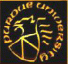
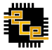

I am almost always looking for graduate students interested in doing research in computer systems. The two overriding criteria for working in our group are zip smartness and desire to build usable computer systems.
If you want to work with me and my collaborators in the School of Electrical and Computer Engineering, consider applying to our department and within that our program, Computer Engineering. You will have an opportunity to work with a great bunch of faculty and students interested in computer software and hardware.
A list of my current projects is available here. I am looking to advise PhD theses and in exceptional cases, MS theses and independent studies. I have a few funded research assistantship positions available for the projects, but for that I expect to work with the student for a minimum of two months before making a commitment. This is so that I understand the student's interest and motivation in the field, and the student gets a chance to see if the work suits him/her.
I believe in working hard, getting started on the thesis problem fast and publishing frequently. Typically, students working with me write at least 2 top-tier conference papers in their first year working with me. You are welcome to contact my students for insights into research in our group.
I am looking for students with a strong systems
background. Knowledge of operating systems and computer networks is a must.
A strong programming background in some object-oriented language, preferably
C++ or Java, and a scripting language, typically Python, is required. Prior experience in designing, implementing or
analyzing computer systems is a plus.
Graduate students that choose to work with me,
must take the graduate-level computer networking, compilers, operating
systems courses, distributed systems and fault-tolerant system design courses,
or show corresponding proficiency level.
If you are interested in pursuing research in
our group, please send email to sbagchi@purdue.edu to set up a (virtual) meeting,
. Include in your subject "Read the DCSL new student post". Do this after you have filled out the form
for potential researchers in our group at: this location .
Note to graduate school applicants
In general it is not possible to commit to a research
assistantship without having met you. It is a good idea to make contact
once you are at Purdue. Show your interest, participate in a small project
while you are taking your first set of courses, or take my graduate-level class on fault-tolerant computing systems. If you are interested in
joining my group and wish to initiate contact before starting at Purdue,
write to me only AFTER you have applied to Purdue and have got an
admission offer. I regret that I am unable to reply to other emails from
prospective students.
| 
Purdue Home Page |

Purdue ECE Home Page |